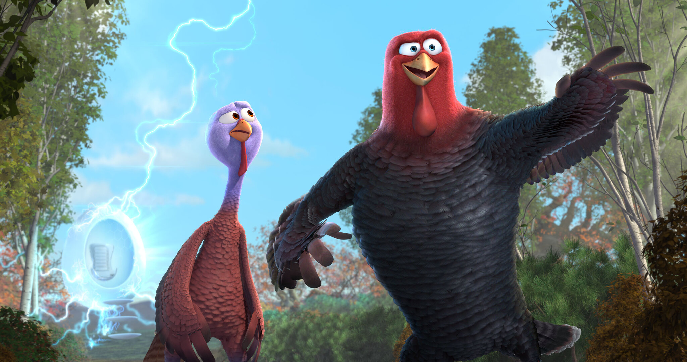
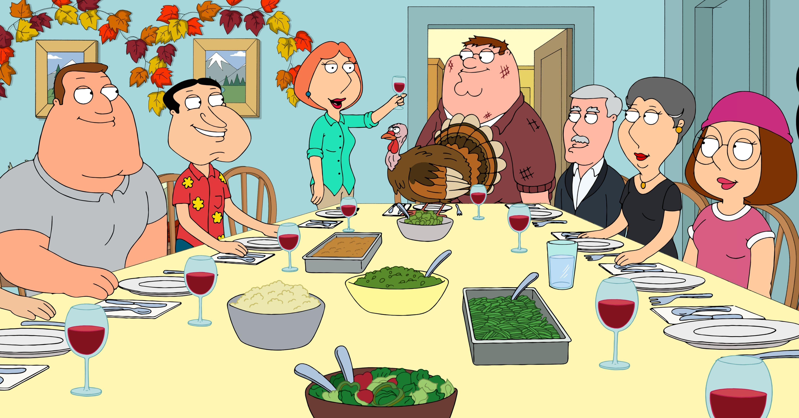
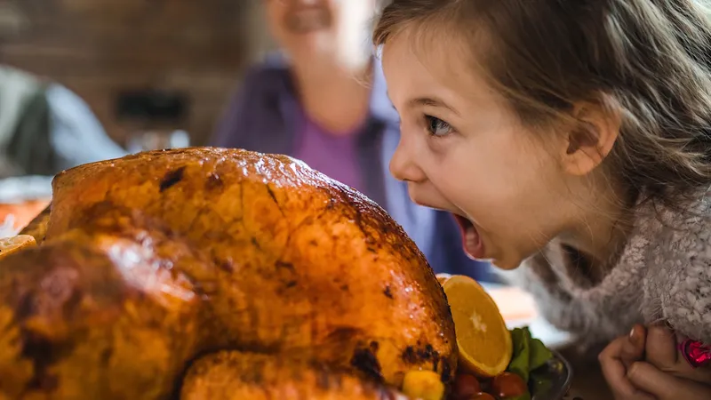
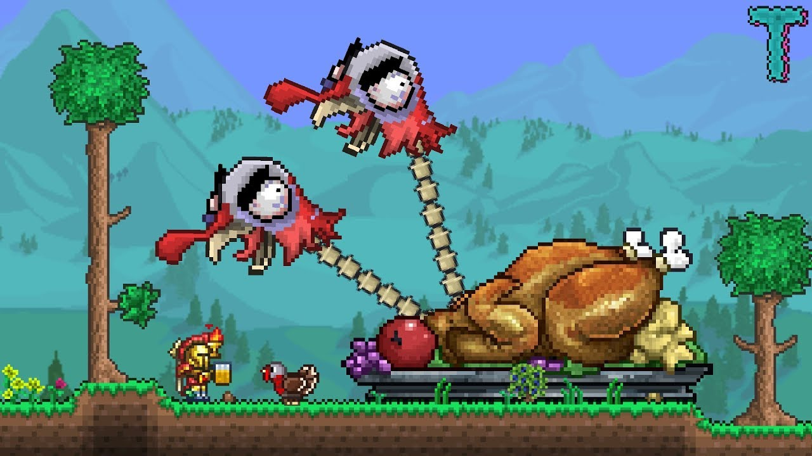

What I’m Looking Forward To
The thing I’m looking forward to is Thanksgiving. Thanksgiving is a top 3 holiday and has been around since 1621. Thanksgiving is also during a good time of year where the weather is the best. My family from all over comes to Thanksgiving and that's the only time I get to see them. I can’t wait to bust down on some turkey and chuck some hogskin in the backyard.
Why I’m Excited
I’m most excited about the food. My dad, uncle, and I fry the turkey. We have perfected the recipe over many generations. My family actually likes the turkey and doesn’t have to pretend it isn’t dry as hell. I also get to watch the movie Freebird. It’s the best Thanksgiving movie ever made and because he goes back to the first Thanksgiving to get turkey off the menu.
How Others Can Get Involved
You can get involved by helping your family cook instead of being a bum. Cooking isn’t hard, you just have to know what you are doing. Also talk to your family instead of eating and going back to your room. Also watch Freebrid as many times as you can. It's really good I promise. Lastly, eat more food than your father to show that you are the dominant male in the household.
Timer
Timer here
